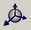

To zoom out: Click the button. The cursor changes to . Click on the canvas and drag the mouse down.
To zoom in: Click the button. The cursor changes to . Click on the canvas and drag the mouse up.
To pan: Click the button. The cursor changes to . Click on the canvas and use the cursor with the left mouse button pressed to pan through the scenario.
To rotate: Click the  button. The cursor changes to . Click on the canvas and use the cursor with the left mouse button pressed to change the angle of view.
Use these buttons to explore the scenario topology. Locate all four mobile stations in the scenario. (Nodes 2 and 4 are hidden by the buildings in the default view.)